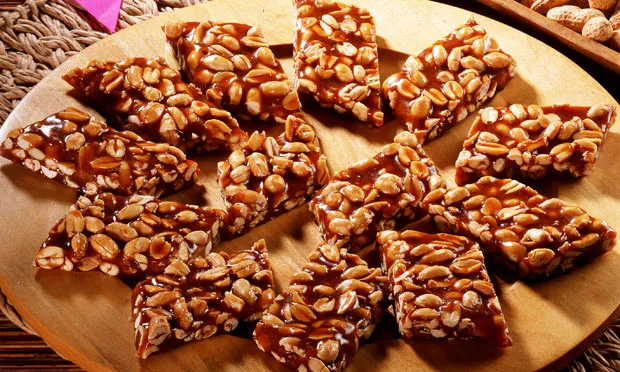

Pé de moleque
Origem: Wikilidia, a enciclopédia livre.
O pé de moleque é um doce típico da culinária brasileira, feito a partir da mistura de amendoim
torrado com rapadura.
O pé de moleque surgiu em meados do século XVI, com a chegada da cana-de-açúcar ao Brasil. A cidade de
Piranguinho, no sul do estado de Minas Gerais, é conhecida pela produção artesanal da guloseima, e tem
se destacado no cenário nacional através da festa do maior pé de moleque do mundo, que faz parte do
calendário cultural de festividades do município.
Há uma derivação do doce na versão de um bolo, comum a festas juninas de locais do Nordeste do Brasil. O
bolo de pé de moleque também é chamado de "bolo preto", no qual a castanha de caju pode substituir o
amendoim, mantém-se a rapadura e adiciona-se massa de mandioca fermentada (pubada, massa puba) e outros
ingredientes.
História
A receita que deu origem ao pé de moleque chegou à Europa na Alta Idade Média, levada pelos árabes em
suas incursões à península Itálica e à Península Ibérica. Dessa invenção árabe se originaram, antes do
doce brasileiro (feito com mel de cana, a rapadura), o similar português de mel de abelhas chamado
"nogat" (nome que veio do francês), como também o nougat francês de Montélimar no Vale do Ródano, o
espanhol turró de Alicante, Valência, de Toledo, de Castuera (na Estremadura), o italiano torrone de
Cremona, Alba, Siena, Benevento, o siciliano cubbàita e ainda o indiano chikki, que foi levado para o
oriente pelos portugueses no início do século XVI.
Uma das primeiras referências a esse doce no Brasil encontra-se no livro Doceiro Nacional. Neste livro é
possível encontrar duas receitas: o pé de moleque preparado com açúcar e o preparado com rapadura.
Galeria de imagens
|  |
 |
Referência
- WikipédiA